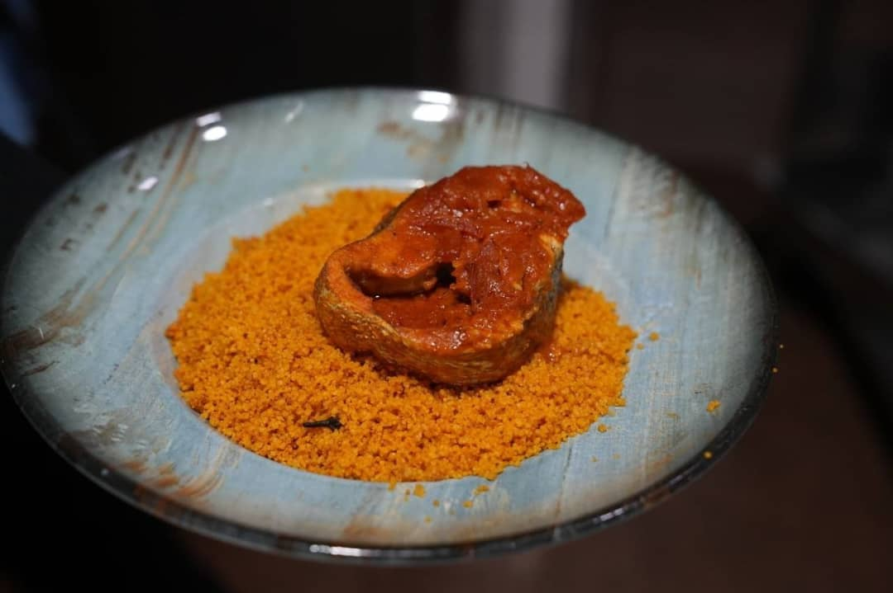
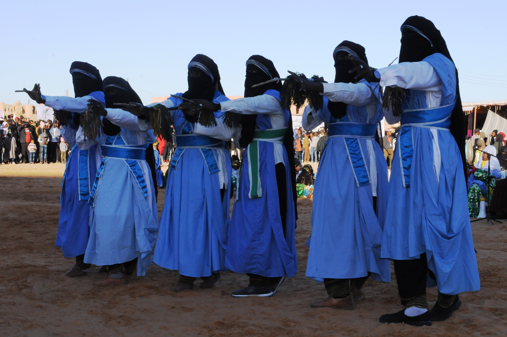
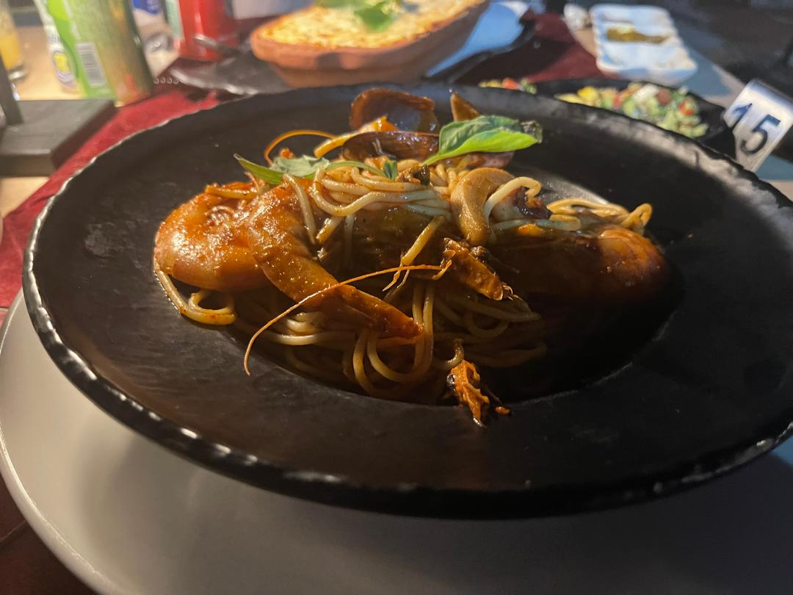

Visit Libya
Visit Libya

Libyan Culture & Cuisine
Libyan culture is a living experience expressed through folklore, dress, hospitality, crafts, and markets—and completed at the Libyan table.
Libyan Cuisine
Libyan food is known for its boldly spiced flavors. Its dishes range across grains, vegetables, meat, and fish, shaped by both Mediterranean cooking and desert traditions.
- Bazin
- Couscous
- Rishda
- Mubattan
- Usban
- Hraimi
- Libyan soup
- Fattat
- Bureek
- Qallaya

Libyan Sweets
Libyan sweets include maqrud, ghraiba, kaak al-bilad, qraynat, abambar, rozata, baklava, debla, and hajibat.

Contemporary Restaurants
Restaurants and cafés in the main cities offer Libyan and contemporary dishes alongside Turkish, Levantine, Italian, and international cuisines.

Traditional Handicrafts
Libyan traditional industries are distinguished by their variety and refined artistry, including copperwork, ironwork, silver and gold jewellery, pottery, wool, leather, palm crafts, silk, woodwork, and musical instruments.

Libyan Folklore
Libyan folklore reflects the diversity of its landscapes and local memory, from music and popular dances to horsemanship and social celebrations.

Folklore & Festivals
Festivals and cultural events in Libya express the community's joy and connection with nature and the seasons, including the autumn festivals in Hun and Ghat, the spring gathering in Sawknah, and the Awjila, Germa, and Tisawah festivals.

Historic Markets
Old markets are vibrant spaces for crafts, perfumes, fabrics, popular foods, and the everyday encounters of Libyan hospitality.
Libyan Hospitality
Libyan hospitality is expressed through tea, dates, gatherings, and the warmth of welcome. It is an essential part of every visitor's experience.
